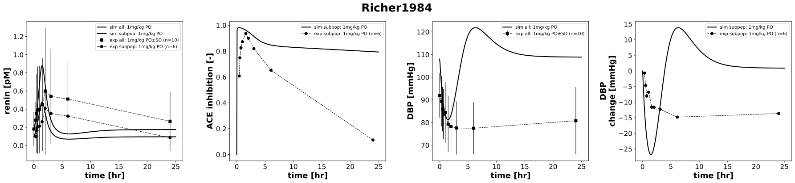

Richer1984
Models
Datasets
- CAP1_blood pressure diastolic_all: Richer1984_CAP1_blood pressure diastolic_all.tsv
- CAP1_concentration_captopril_plasma_all: Richer1984_CAP1_concentration_captopril_plasma_all.tsv
- CAP1_concentration_renin_plasma_all: Richer1984_CAP1_concentration_renin_plasma_all.tsv
- CAP1_ACE inhibition_plasma_6: Richer1984_CAP1_ACE inhibition_plasma_6.tsv
- CAP1_blood pressure diastolic (change)_6: Richer1984_CAP1_blood pressure diastolic (change)_6.tsv
- CAP1_concentration_captopril_plasma_6: Richer1984_CAP1_concentration_captopril_plasma_6.tsv
- CAP1_concentration_renin_plasma_6: Richer1984_CAP1_concentration_renin_plasma_6.tsv
Figures
- PK: Richer1984_PK.svg
- PD: Richer1984_PD.svg
{kind=link}
PK

|
PD
|  |
Code
../../../../experiments/studies/richer1984.py
"""Richer1984 experiment"""
from typing import Dict
from sbmlsim.data import DataSet, load_pkdb_dataframe
from sbmlsim.fit import FitMapping, FitData
from sbmlutils.console import console
from pkdb_models.models.captopril.experiments.base_experiment import (
CaptoprilSimulationExperiment,
)
from pkdb_models.models.captopril.experiments.metadata import Tissue, Route, Dosing, Health, Fasting, \
CaptoprilMappingMetaData, PKPDData
from sbmlsim.plot import Axis, Figure
from sbmlsim.simulation import Timecourse, TimecourseSim
from pkdb_models.models.captopril.helpers import run_experiments
import numpy as np
class Richer1984(CaptoprilSimulationExperiment):
"""Simulation experiment for Richer1984.
Pharmacokinetics, antihypertensive and biological effects of captopril in hypertensive patients.
- no information about fasting
- sd checked
"""
routes = "PO"
dose = 1 # mg/kg
ren = {
"all": 8.1, # pg/ml
"subpop": 4.41,
}
sbp = {
"all": 177.9, # mmHg
"subpop": 177.9, #assumed
}
dbp = {
"all": 108, # mmHg
"subpop": 108, # assumed
}
colors = {"control": CaptoprilSimulationExperiment.renal_colors["Control"]}
element_unique = ["blood pressure diastolic (change)", "blood pressure diastolic", "concentration_renin", "ACE inhibition", "captopril"]
def datasets(self) -> Dict[str, DataSet]:
dsets = {}
self.reset_state()
for fig_id in ["Tab2", "Fig1"]:
df = load_pkdb_dataframe(f"{self.sid}_{fig_id}", data_path=self.data_path)
for label, df_label in df.groupby("label"):
dset = DataSet.from_df(df_label, self.ureg)
for element in self.element_unique:
if element in label and "excretion" not in label:
self.data_collection(element=element, label=label)
dset.unit_conversion(
self.data_type, self.conversion_factor
)
dsets[f"{label}"] = dset
break
return dsets
def simulations(self) -> Dict[str, TimecourseSim]:
Q_ = self.Q_
tcsims = {}
for group, ren_value in self.ren.items():
tcsims[f"cap_{self.routes}_{self.dose}_{group}"] = TimecourseSim(
Timecourse(
start=0,
end=60 * 25, # minutes
steps=400,
changes={
**self.default_changes(),
"BW": Q_(72, "kg"),
"HEIGHT": Q_(163.7, "cm"),
# "MAP": Q_((177.9+2*108)/3, "mmHg"),
f"SBP_ref": Q_(self.sbp[group], "mmHg"),
f"DBP_ref": Q_(self.dbp[group], "mmHg"),
"HR": Q_(77.3, "1/min"),
f"{self.routes}DOSE_cap": Q_(self.dose, "mg/kg") * Q_(72, "kg"),
f"ren_ref": Q_(ren_value, "pg/ml") / self.Mr.ren,
f"[ren]": Q_(ren_value, "pg/ml") / self.Mr.ren
},
)
)
return tcsims
def fit_mappings(self) -> Dict[str, FitMapping]:
mappings = {}
for kl, label in enumerate(self.clabels):
group = label.split("_")[-1]
if group == "6":
group = "subpop"
mappings[
f"fm_cap{self.routes}{self.dose}_{self.element_ids[kl]}_plasma_acute_nrfasting_{group}"
] = FitMapping(
self,
reference=FitData(
self,
dataset=label,
xid="time",
yid="mean",
yid_sd="mean_sd",
count="count",
),
observable=FitData(
self,
task=f"task_cap_{self.routes}_{self.dose}_{group}",
xid="time",
yid=self.yids[kl],
),
metadata=CaptoprilMappingMetaData(
tissue=Tissue.PLASMA,
route=Route.PO,
dosing=Dosing.SINGLE,
health=Health.HEALTHY,
fasting=Fasting.NR,
data=PKPDData.PK if self.element_ids[kl] == "cap" else PKPDData.PD,
),
)
return mappings
def figures(self) -> Dict[str, Figure]:
return {
**self.pk_figures(),
**self.pd_figures(),
}
def pk_figures(self) -> dict[str, Figure]:
fig = Figure(
experiment=self,
sid="PK",
num_rows=1,
num_cols=1,
name=f"{self.__class__.__name__}",
height=self.panel_height,
width=self.panel_width,
)
plots = fig.create_plots(
xaxis=Axis(self.labels["time"], unit=self.units["time"]), legend=True
)
plots[0].set_yaxis(self.labels["[Cve_cap]"], unit=self.units["[Cve_cap]"])
# simulation
plots[0].add_data(
task=f"task_cap_{self.routes}_{self.dose}_all",
xid="time",
yid="[Cve_cap]",
label=f"sim all: {self.dose}mg/kg {self.routes}",
color=self.colors["control"],
)
# dataset
for label in self.clabels:
if "captopril" in label:
plots[0].add_data(
dataset=label,
xid="time",
yid="mean",
yid_sd="mean_sd" if "all" in label else None,
count="count",
label=f"exp {label.split("_")[-1]}: {self.dose}mg/kg {self.routes}" if "all" in label else f"exp subpop: {self.dose}mg/kg {self.routes}",
color=self.colors["control"],
marker="s" if "all" in label else "o",
)
return {
fig.sid: fig,
}
def pd_figures(self) -> dict[str, Figure]:
n_plot = {
"[ren]": 0,
"ace_inhibition": 1
}
fig = Figure(
experiment=self,
sid="PD",
num_rows=1,
num_cols=4,
name=f"{self.__class__.__name__}",
height=self.panel_height,
width=self.panel_width * 4,
)
plots = fig.create_plots(
xaxis=Axis(self.labels["time"], unit=self.units["time"]), legend=True
)
for (kiu, yid_unique), groups in zip(enumerate(["[ren]", "ace_inhibition", "DBP", "DBP_change"]), [["all", "subpop"], ["subpop"], ["all"], ["subpop"]]):
plots[kiu].set_yaxis(self.labels[yid_unique], unit=self.units[yid_unique])
for group in groups:
# simulation
plots[kiu].add_data(
task=f"task_cap_{self.routes}_{self.dose}_{group}",
xid="time",
yid=yid_unique,
label=f"sim {group}: {self.dose}mg/kg {self.routes}",
color=self.colors["control"],
)
# dataset
for kl, label in enumerate(self.clabels):
if yid_unique == self.yids[kl]:
plots[kiu].add_data(
dataset=label,
xid="time",
yid="mean",
yid_sd="mean_sd" if "all" in label else None,
count="count",
label=f"exp {label.split("_")[-1]}: {self.dose}mg/kg {self.routes}" if "all" in label else f"exp subpop: {self.dose}mg/kg {self.routes}",
color=self.colors["control"],
marker="s" if "all" in label else "o",
)
return {
fig.sid: fig,
}
if __name__ == "__main__":
run_experiments(Richer1984, output_dir=Richer1984.__name__)